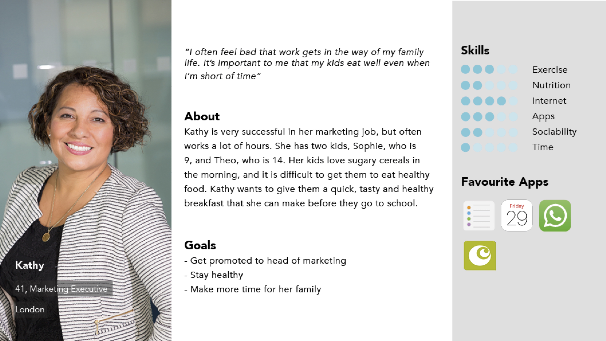

My research has allowed me to discover who my target audience might be. From this, the next step is to create user personas. Creating user personas will help me to think of my audience as real people, rather than just numbers. I considered three different people, who each have different ages, locations, jobs, family/marital statuses, but all of them are likely to be interested in a product like this.

With all my research completed, I next moved on to my campaign message. From looking at the Sambazon Acai website, I saw a lot of content about the farmers in the Amazon Rainforest, and how Sambazon give back to these communities, for example by giving them consistent work, fair pay and investing money into schools and education. I want to really focus on this in my campaign, because I have also seen an increase in people 'voting with their dollars' by buying products that are ethically sourced.
I have decided to call my campaign '#powerofpurple', to emphasise the positive effect that buying this product has on these communities, but also to show how this superfood product is also powerful, as it is known to have many health benefits such as anti-ageing, reducing cholesterol, and being full of antioxidants. This campaign will aim to go against current opinions of acai as a 'fad food.'
A lot of the time, these narrative structures have similar outcomes. Whether you watched his documentary in a linear style, or you pick the order yourself, the message is still the same, but it is likely that the audience is going to feel more engaged with the media if they have some participation in how they consume it.